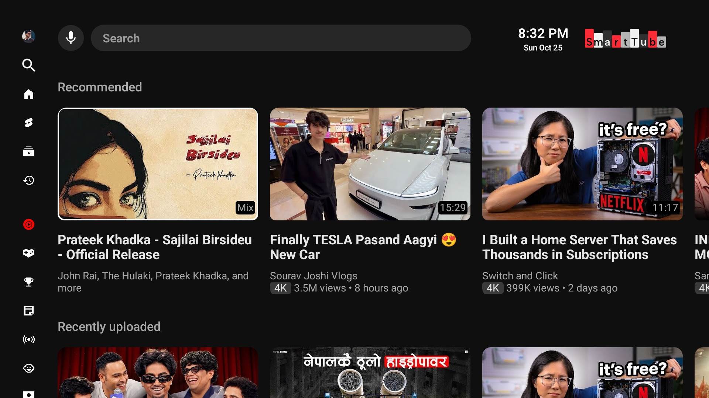
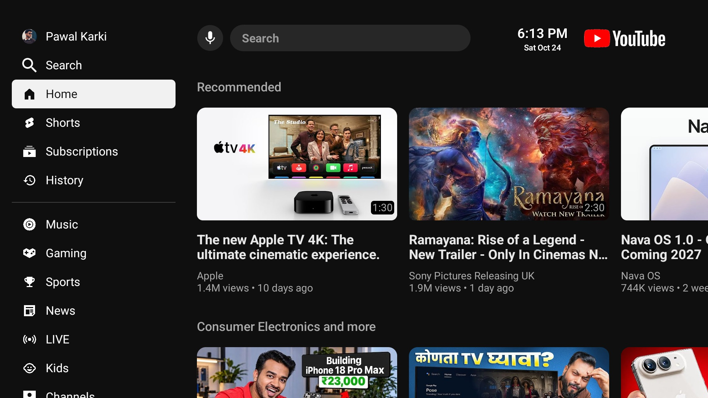
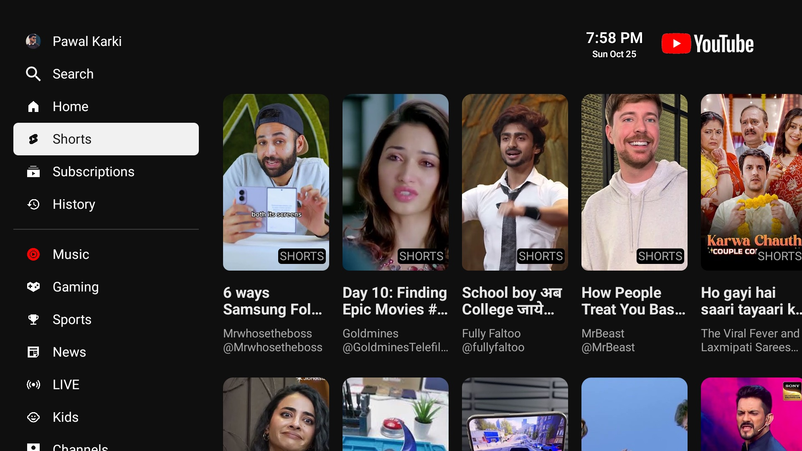
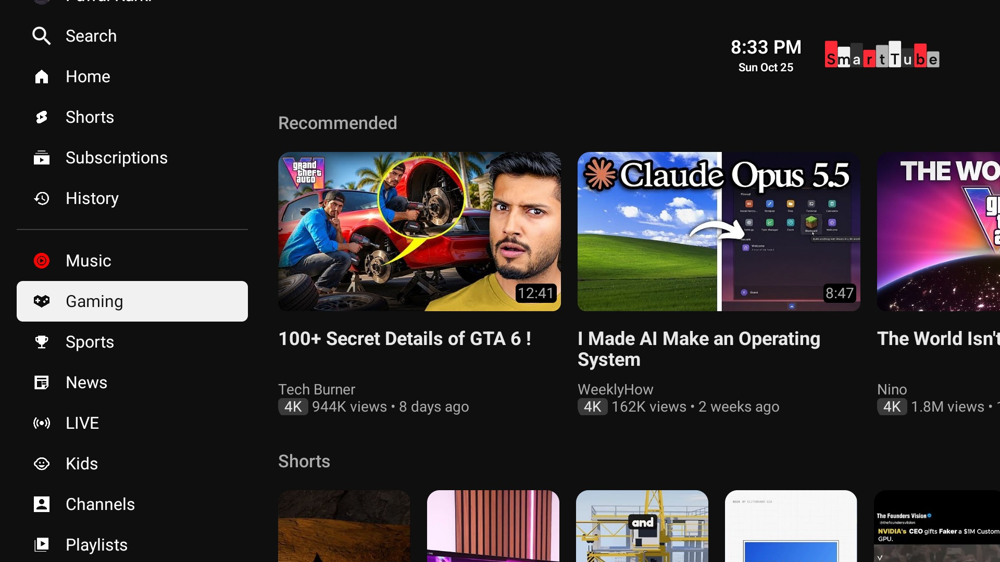

Smooth video
on slow TVs
A TV-first interface for Android TV and TV boxes, tuned for four-core, 2 GB hardware. Free, no Google services needed.
Download the APK



Four screens, one remote
The sidebar sits as a rail of icons so the rows get the screen. Every card is a rounded 16:9 thumbnail with two lines of title, then the channel and views.
A sidebar that gets out of the wayIt collapses to an icon rail and opens with labels.
Badges where you lookChips sit before the views line.
Focus you can seeA white ring. No zoom, no shadow.
Made for slow hardware
Player warm-upStarts after launch, not ten seconds in.
Default capA faster first frame.
Skeleton rowsShow where content will land.
A clean playerClock, quality info, remaining time and likes stay off until you switch them on in settings.
No Google servicesRuns without them.
Install in minutes
Install it on the TV
With the Downloader app
- Install Downloader from your TV's app store.
- Open it, select the address field, and type the link below.
- When it asks, allow Downloader to install apps, then choose Install.
With a USB stick
- Copy the APK file onto a USB stick on your computer.
- Plug it into the TV and open it with a file manager app.
- Select the file, allow installs from that app if asked, then choose Install.
Menu names differ by brand. The setting you need is called Install unknown apps, or Unknown sources on older TVs.
Questions
DownloadWhich file do I download?
Most Android TVs and boxes run 32-bit software even on 64-bit chips. If the 64-bit file will not install and says no matching ABIs, take the 32-bit one. The universal file works on both and is about 40 MB.
CostIs it free?
Yes. It is a fork of the open-source SmartTube project and keeps its MIT licence.
AccountDo I need Google services?
No. It does not need them, which is why it runs on boxes that do not ship them.
SpeedWhy is it lighter on slow TVs?
Pages are only built once the focus settles, loading placeholders are cached textures, prefetching waits until you stop on a card, and the default quality is capped at 1080p.
UpdatesCan I update over another build?
Only over a build signed with the same key. These builds use a debug key, so if you installed a different build of the app first, remove it before installing this one.
Try it tonight
The download comes from GitHub. Open it on the TV, or copy it over, then install it from the file manager.